Осака
Наша база на 7 ночей • 11–18 мая 2026
🏠 НАШ ДОМ В ОСАКЕ
Ebie House
📍 Адрес: chōme-6-19 Ebie, Fukushima Ward, Osaka, 553-0001, Япония
📅 Заезд: 11 мая, 21:00 | Выезд: 18 мая, 12:00
🇯🇵 День 1 · 11 мая (пн) — Прилёт и адаптация
🕒 Прилёт в 18:00 → паспортный контроль (1 ч) → трансфер → заселение в 21:00
Лёгкий ужин рядом с домом, отдых после перелёта.
🍣 День 2 · 12 мая (вт) — Осака: Dotonbori, Shinsaibashi, Kuromon Market
Утро: Дом → Kuromon Market
День: Kuromon → Shinsaibashi → Dotonbori
Вечер: Dotonbori → Umeda Sky Building
Возвращение: Umeda → Дом
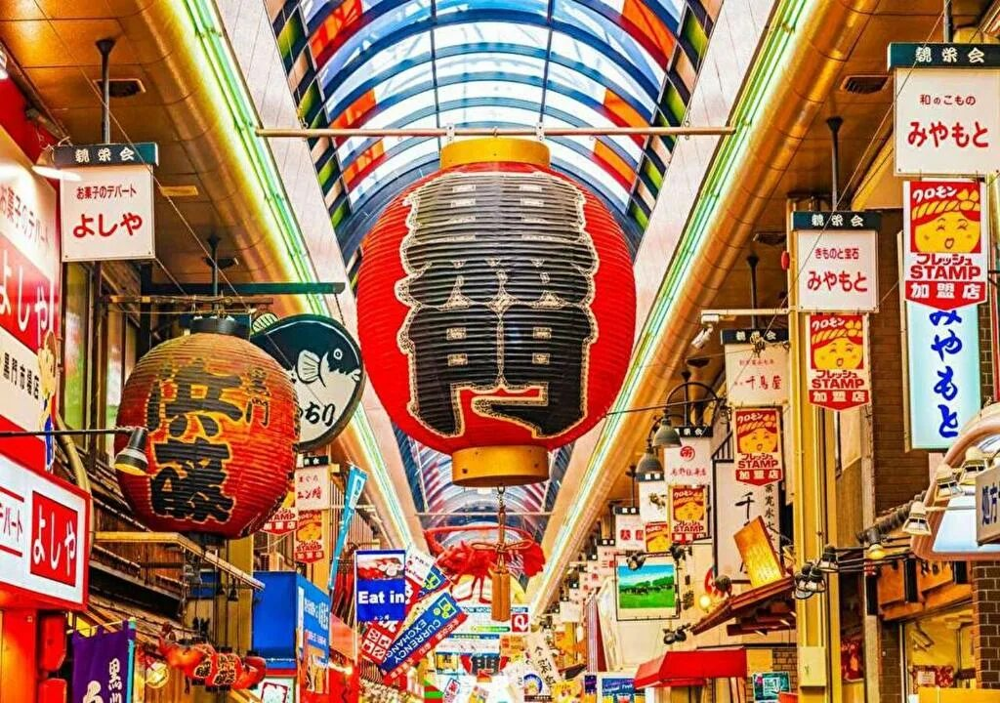
Рынок, который называют "кухней Осаки". Более 150 магазинов с морепродуктами, суши, такояки и другими японскими деликатесами.
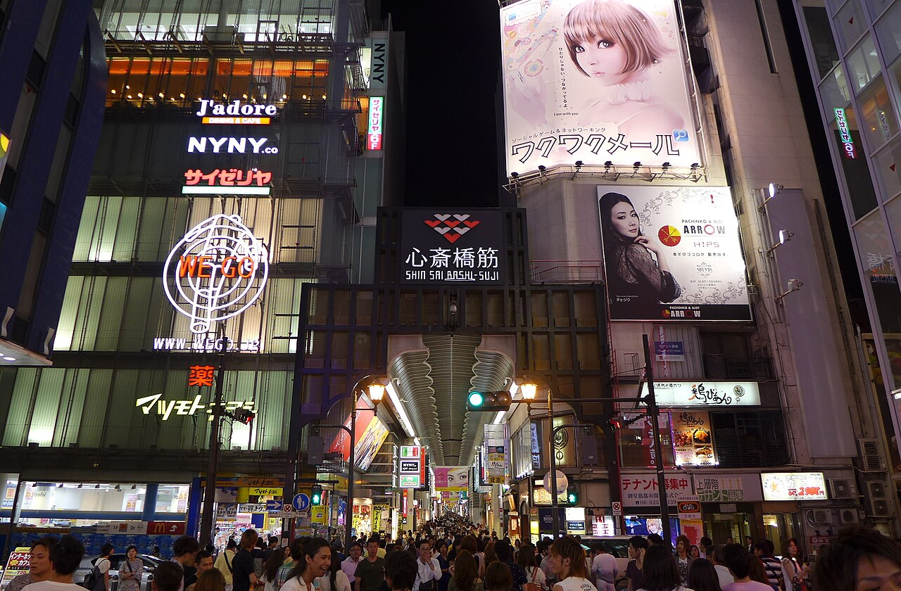
Крытая торговая улица длиной 600 метров с множеством магазинов — от люксовых брендов до уютных японских лавок.
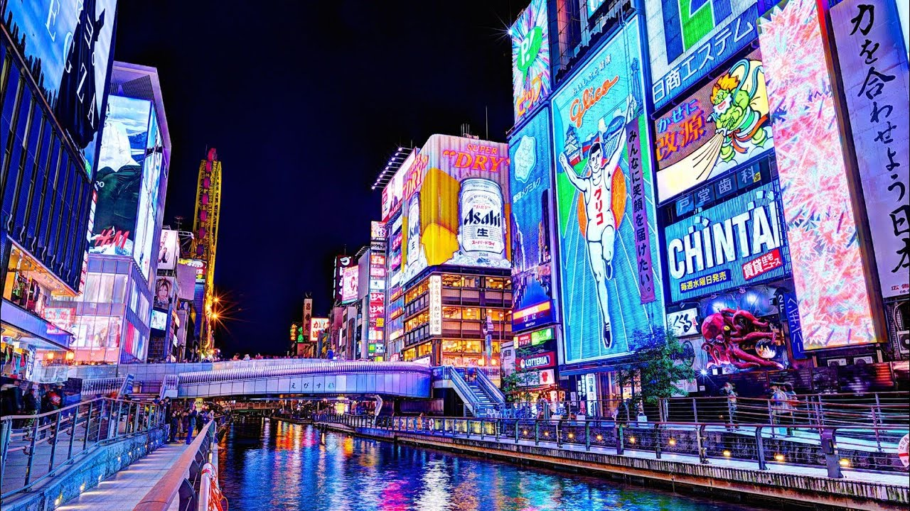
Самый известный район Осаки с яркими неоновыми вывесками, гигантскими крабами и осьминогами. Лучшее место для ужина и фото.
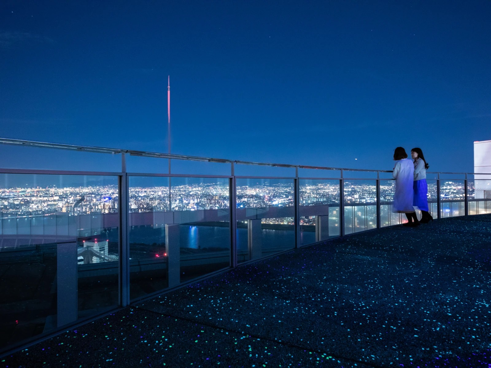
Небоскрёб с уникальной "парящей" смотровой площадкой на высоте 173 м.
🎢 День 3 · 13 мая (ср) — Замок Осаки → Universal Studios → Shinsekai
Утро: Дом → Замок Осаки
День: Замок Осаки → Universal Studios
Вечер: Universal Studios → Shinsekai
Возвращение: Shinsekai → Дом
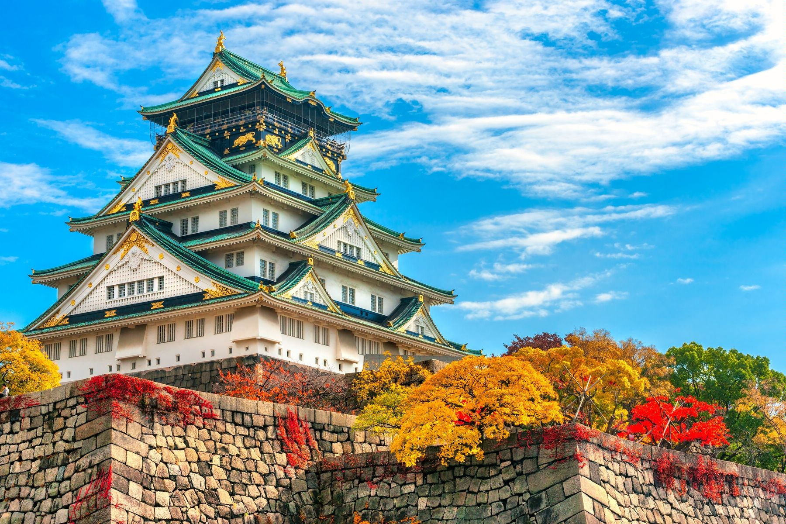
Знаменитый замок, играющий важную роль в истории Японии. С высоты смотровой площадки открывается отличный вид на город.
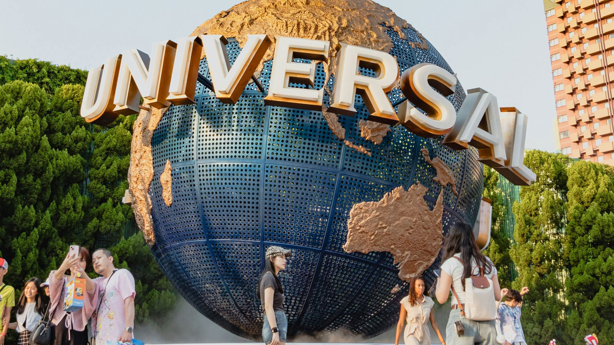
Один из самых посещаемых парков развлечений в мире.
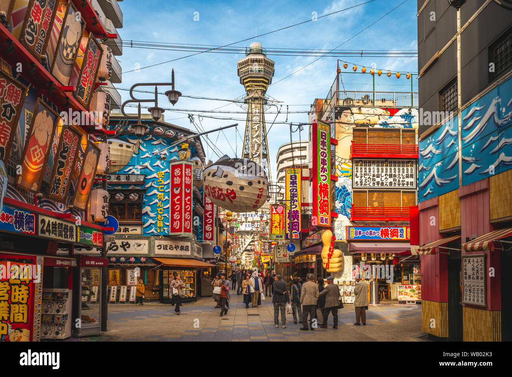
Район с атмосферой старой Осаки. Башня Цутэнкаку.
⛩ День 4 · 14 мая (чт) — Киото: Фусими Инари, Tofukuji Funda-in, Гион
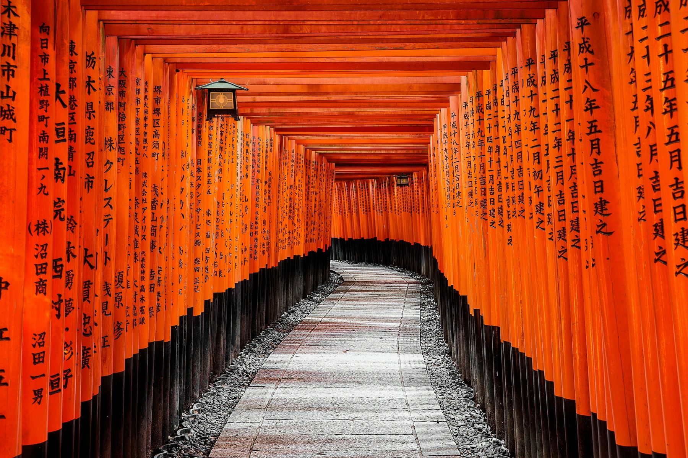
Знаменитое святилище с тысячами красных тории.

Тихий храм с садом «Журавль и Черепаха».

Район гейш.
🎋 День 5 · 15 мая (пт) — Арасияма, ретро-поезд, лодка, Отаги, Сайходзи

Знаменитый лес из высоких бамбуков. Лучше приходить рано утром.
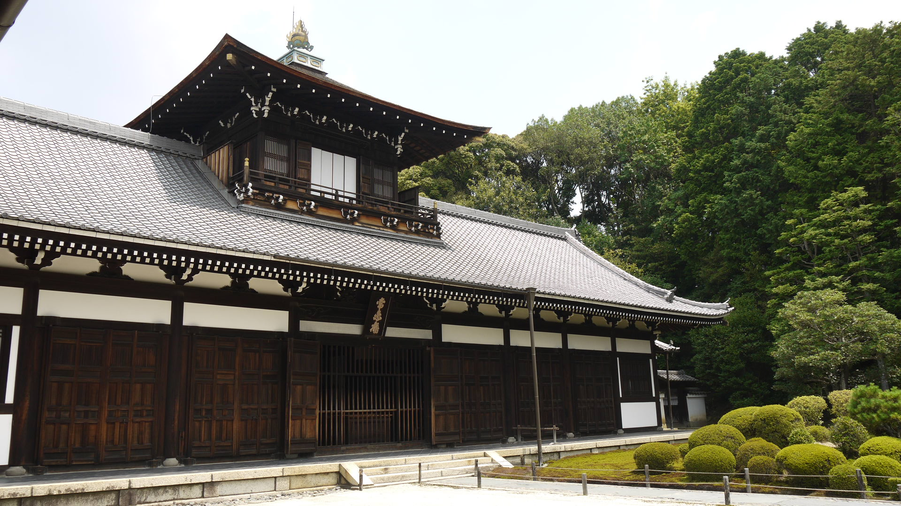
Живописная поездка по ущелью Ходзугава. Длительность ~25 мин.
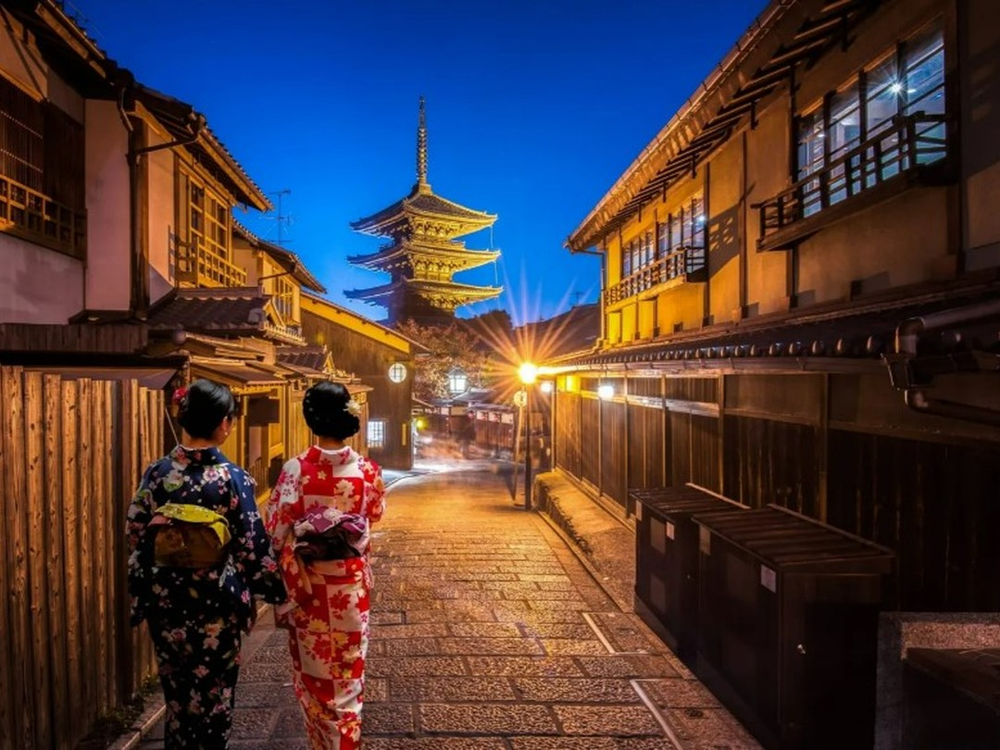
Спуск на лодке по реке Ходзугава (около 2 часов).
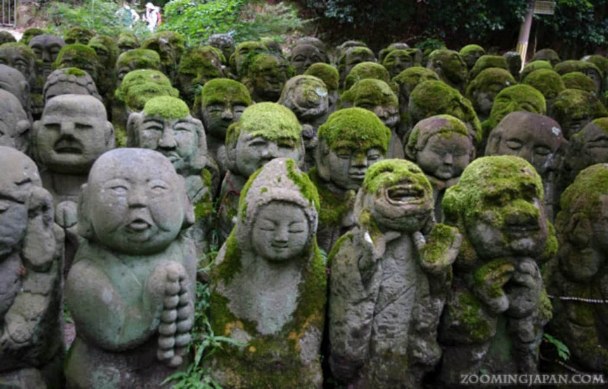
Уникальный храм с 1200 каменными статуями раканов.
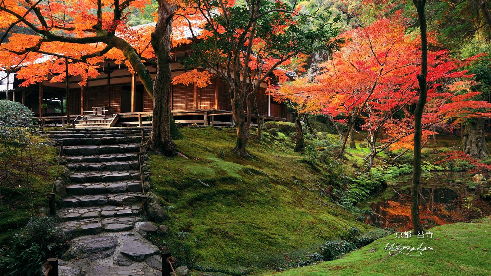
Храм мхов, объект ЮНЕСКО. Требуется предварительная запись.
* Транспорт по Киото ¥2660 оплачивается отдельно
🦌 День 6 · 16 мая (сб) — Нара: олени, Тодай-дзи, Касуга-тайша
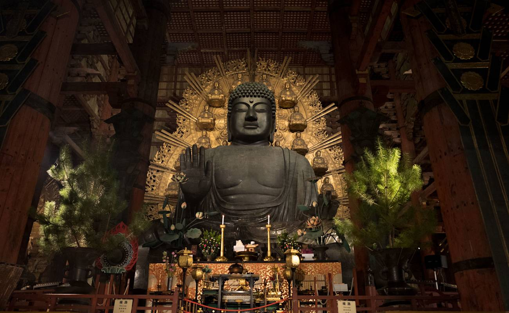
Один из самых знаменитых храмов Японии с гигантским Буддой.
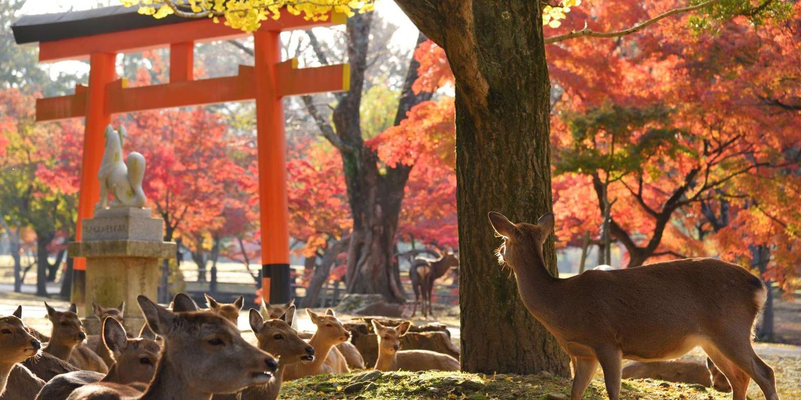
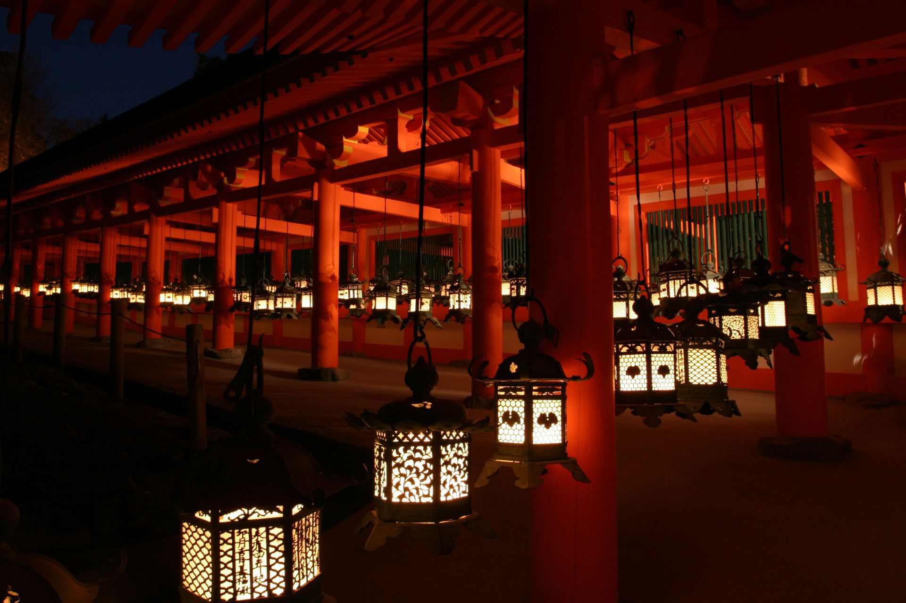
Святилище с тысячами бронзовых и каменных фонарей.
🗓️ День 7 · 17 мая (вс) — два варианта на выбор
Выбираем подходящий по настроению:
🍁 СЦЕНАРИЙ А: Дополнительный день в Киото
Посмотрим то, что не успели в первые два дня, или то, что посоветуют местные. Идеи:
- Храм Дайкаку-дзи (Daikaku-ji) – тихий храм в районе Сага, связанный с императорской семьёй
- Императорская вилла Кацура (Katsura Imperial Villa) – шедевр японской архитектуры, требуется предварительная запись
- Сад Сюгакуин (Shugakuin Imperial Villa) – живописный сад с видом на горы
- Киото Тауэр (Kyoto Tower) – смотровая площадка в центре города
🛍️ СЦЕНАРИЙ Б: Шопинг и отдых в Осаке
Если хотим расслабиться после насыщенной недели, вот что можно посетить:
- Парк Наканосима (Nakanoshima Park) – зелёный остров с музеями и набережной
- Osaka Museum of Housing and Living – музей с воссозданным городом эпохи Эдо
- Музей науки (Osaka Science Museum) – интерактивный, интересный для взрослых и детей
- Абэно Харукас (Abeno Harukas) – самая высокая смотровая площадка в Японии
🚆 День 8 · 18 мая (пн) — Переезд к Фудзи (выезд из дома до 12:00)
📊 Сводка расходов за 7 дней в Осаке
| День | Маршрут | Йены (JPY) | Рубли (≈) |
|---|---|---|---|
| День 1 | Прилёт | ¥1170 | |
| День 2 | Осака (город) | ¥2070 | |
| День 3 | Замок + Universal + Shinsekai | ¥11220 | |
| День 4 | Киото (Фусими, Фунда-ин, Гион) | ¥2680 | |
| День 5 | Киото (Арасияма, поезд, лодка, Отаги, Сайходзи) | ¥5880 | |
| День 6 | Нара (олени, Тодай-дзи, Касуга-тайша) | ¥2440–2940 | |
| День 7 | Свободный день (Киото или Осака) | ¥1000–3000 | |
| ИТОГО (мин): | |||